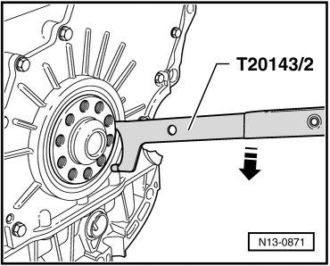
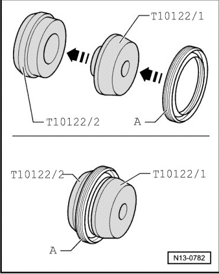
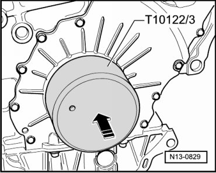

Rear Crankshaft Main Bearing Seal: Service and Repair
Oil Seal, Flywheel Side
Special tools, testers and auxiliary items required
• Pulling fixture (T10122)
• Extractor hook (T20143)
Removing
- Place pulling hook (T20143/2) behind sealing lip of sealing ring as shown in the illustration.
- Support pulling hook (T20143/2) on sealing flange and pry out sealing ring in - direction of arrow -.

Installing
- Pull the seal - A - with the outer side over the sleeve (T10122/1) onto the assembly tool (T10122/2).

- Separate both assembly sleeves.
- Then place assembly tool (T10122/2) with dry sealing ring on to crankshaft pin.
- Now knock it into sealing flange until it stops using assembly tool (T10122/3).
